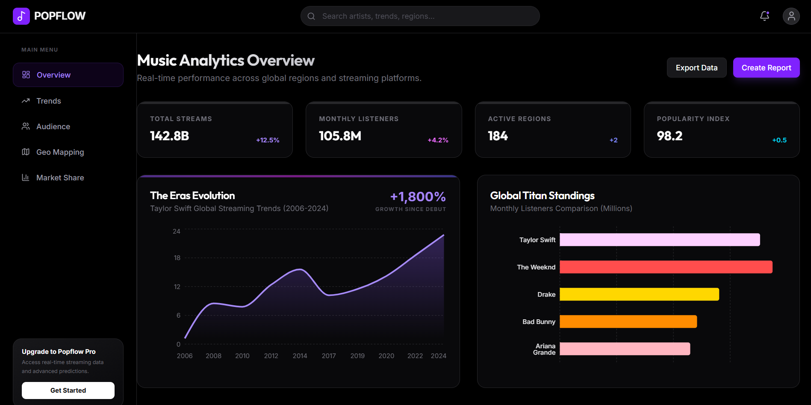
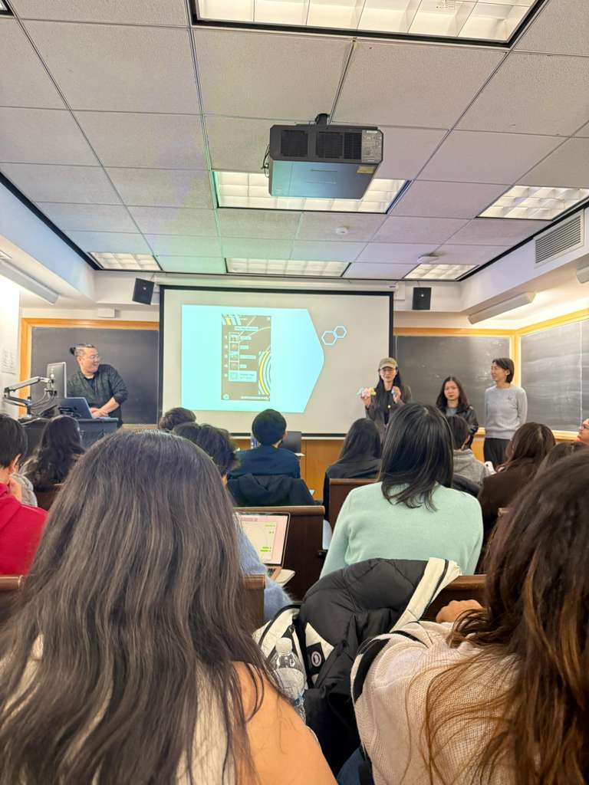

Data Engineering · Music Analytics · IP Commercialization
Unlocking culture momentum for smarter IP commercialization — a real-time analytics platform that tells artist managers exactly when to drop merch, sell tickets, and book venues.

Music Analytics Overview
Goal
Artist managers make million-dollar IP deals based on gut feeling and lagging data. PopFlow replaces guesswork with real-time cultural signal intelligence — so every decision is backed by data.
Problem & solution
⚠ The Problem
Merch drops, ticket pre-sales, and tour bookings are timed by instinct. Artist data is scattered across Spotify, YouTube, TikTok, and Google — with no unified intelligence layer.
💡 The Solution
A real-time cultural signals engine with an Artist Decision Hub — giving managers one dashboard with confidence scores for merchandise, ticketing, and event logistics decisions.
How it works for a user
Open the Music Analytics Overview
See live KPIs — total streams, monthly listeners, active regions, and popularity index — all updating in real time.
Explore streaming trends and competitor standings
The Eras Evolution chart tracks an artist's global streaming growth since debut. Global Titan Standings compares monthly listeners across top artists.
Check the Artist Decision Hub
Three strategy cards — Merchandise Drop, Ticket Pre-sale, Event Logistics — each show a status (Optimal / Wait) and a confidence score backed by real signals.
Get the Growth Predictor forecast
The platform predicts the next organic engagement peak based on historical era cycle patterns — helping teams pre-sell tickets at exactly the right moment.
→ From scattered data to actionable cultural intelligence
Key features
✓ Optimal
Merchandise Drop
94% Confidence
Demand velocity tracking — when streaming velocity spikes in key regions, the system flags the optimal window to launch merch before the peak.
⏳ Wait
Ticket Pre-sale
42% Confidence
Engagement stability scoring — the system waits for a "Velocity Spike" signal before recommending pre-sale launch, reducing unsold inventory risk.
✓ Optimal
Event Logistics
87% Confidence
Geographic market clustering — identifies regional intensity clusters (e.g. Tri-State area) to support stadium-scale residency planning.
Group 4 (Nawa, Hanqing, Kunyue (Not here), Eric) with Professor Amreeta Choudhury — after the final presentation

Final presentation day
Results
94% confidence on merchandise timing, 87% on event logistics — powered by demand velocity tracking, geographic clustering, and era-cycle pattern recognition across 250K+ records.
Impact & outcome
How it works — technical overview
Ingestion
API + Scraping
Spotify Web API + kworb.net · YouTube · TikTok · Google Trends daily batch
Storage
MongoDB + PostgreSQL
MongoDB for flexible artist/track data · PostgreSQL for fast filtering and queries
Processing
PySpark + Flask
PySpark calculates velocity + recommendation scores · Flask serves JSON to frontend
Output ✦
Live Dashboard
Dark analytics UI · KPI board · Decision Hub · Growth Predictor · Chart.js
| Source | Signal | Volume | Frequency |
|---|---|---|---|
| Spotify Web API | Streams, followers, popularity | 2 GB/month | Real-time |
| YouTube Data API | Views, likes, comments | 2–4 GB/month | Real-time |
| TikTok Platform | Hashtag views, sound trends | 400MB–3GB/month | Near real-time |
| Google Trends | Search volume, regional interest | Varies | Daily / weekly |
Tech stack
Links